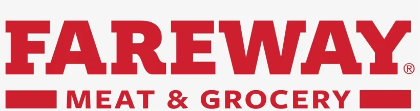

Experience
Embedded Software Engineer — Rice Lake Weighing Systems
June 2025 – Present | Rice Lake, WI
At Rice Lake Weighing Systems I develop firmware for the company's weighing indicators, from the low-level C and C++ running on the device up through the frontend display a customer uses and interacts with out in the field.
- Firmware development: I build and maintain C and C++ firmware for the weighing indicators, shipping new features and tracking down bugs, both obvious and the deep, hard-to-reproduce ones.
- Embedded UI: I design and build the on-device frontend in HTML, CSS/Less, and JavaScript, formatting weighing data in a way that is optimal and easy to read.
- Testing: I write and maintain comprehensive unit tests alongside every feature I ship, so regressions get caught in code long before they reach a customer's scale.
- Hardware debugging: When communication between components misbehaves, I trace it with a logic analyzer across SPI, RS-232, and RS-485 interfaces to pinpoint exactly what is going on.
- Systems integration: Some features I've worked on in the past is integrating digital load cells and custom communication protocols, and connecting our hardware and firmware into one working system.

Part Time Student — Product Engineering Co-op — John Deere
Sep 2022 – May 2025 | Ames, IA
As a part-time co-op alongside my coursework at Iowa State, I worked on the embedded software behind John Deere's Gen 4 and Gen 5 in-cab displays, which display imporant information about a farmer's field/s and the status of the equipment attached.
- Display software: I developed embedded software in C++ using object-oriented design and Qt Creator to improve the UI/UX of the Gen4/5 displays, refining field-boundary adjustments (constant, top/bottom, and driven offsets), building CAN message parsers, and fixing critical data miscalculations, UI spacing, and text issues.
- Testing and Automation: I wrote unit tests with GTest, wired automated testing into Jenkins, and ran one-off UX tests in Python to make sure every change held up before it shipped.
- Agile teamwork: I worked on an Agile Scrum team, participating in daily standup meetings and performing code reviews for my teammates.
- Development environment: I developed in a Linux environment, managing version control across multiple repositories and running simulations to validate behavior.


Grocery Clerk — Fareway Food Stores
Aug 2018 – July 2021 | Waverly, IA
My first job, and one that shaped how I work: at Fareway I worked my way up to the dairy section and was responsible for closing the store at night, and it's where I built the customer-service, communication, and time-managing skills I still use today.
- Dairy section: I kept the dairy section fully stocked, organized, and presentable throughout the day. During closing shifts, I was also responsible for making sure the dairy section was ready for the next day.
- Customer service: I bagged groceries carefully and helped customers out to their cars, contributing to the store's reputation for friendly service.
- Closing lead: I led a team of coworkers to close the store each night, coordinating tasks so it was ready for the next business day.
- Teamwork: I worked with a diverse range of coworkers and customers, learning to communicate clearly with just about anyone.
